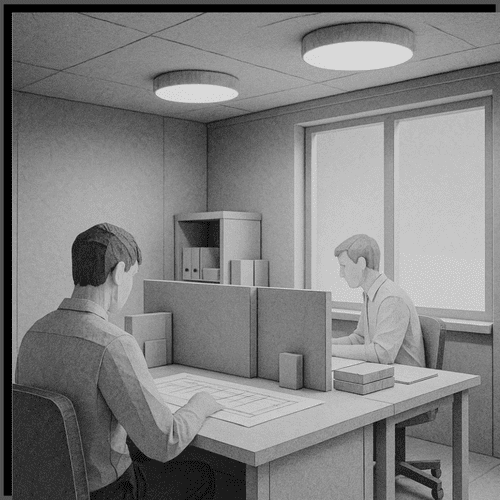
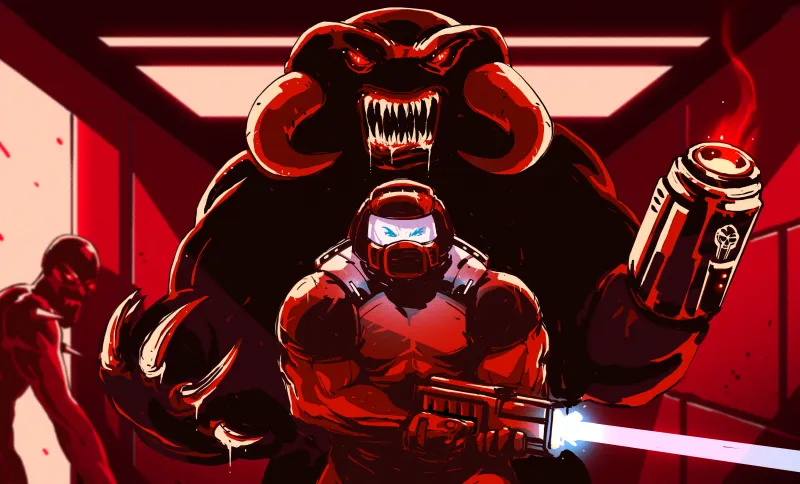

The Inescapeable Link!
You play as Hito, a software engineer that does what he can to escape reality at his boring and awful office job. The company you work at is corrupt, coworkers throw each other under the bus for a promotion, steal each other's food when there are items in the fridge, a ritualistic dancing cult has been rumored to even exist in the office but it could never been proven.

This is the source.
Until one day... as you are on your personal computer you are sent a suspicious email, contains a link and it looks exaclty like something most companies IT would tell you not to click but why should you care? You hate your job, the company could go to hell. So you click it. And you'll learn the consequences of your actions.
Assets Used!
The Murder of Ambiguity

This is the source.
You are sent on a mission from your church to spread the word of your religion to a country far from modern society. As you are on the way to village, you stumble upon advanced buildings and thriving civil life. This was not what was told to you when you were sent on your mission. Is something wrong here? They were thriving but this was not the bumpkin village you were told it would be, but why should you question such thriving life? But that's what was wrong. This was the action of a advanced parasitic alien that landed on this poor village and consumed the minds of every person it reached, and only hunger for more. What will you do? How will you ht it? When will you start?